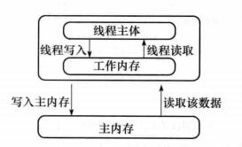

【Java】 Java中的volatile关键字
Java中的volatile关键字
Java语言中的volatile变量可以被看作是一种 “程度较轻的synchronized”
与synchronized块相比，volatile变量所需的编码较少， 并且运行时开销也较少，但是它所能实现的功能也仅是synchronized的一部分。
定义:
Java中的关键字/修饰符
特性：
- 可见性： 当一个共享变量被
volatile修饰时，保证修改值后会立即刷新到主内存中，其他线程需要使用时回去读取最新的值- 当写一个
volatile变量时，JMM会把该线程对应的本地内存中的共享变量刷新到主内存中 - 当读一个
volatile变量时，JMM会把该线程对应的本地内存设置为无效，线程接下来从主内存中读取共享变量
- 当写一个
- 有序性： 主要针对编译器/处理器对指令进行优化/重排的时候
volatile不能保证原子性
要强行说能保证，最多只是单个volatile变量的读/写操作具有原子性，但是对于 count++这样的复合操作实际上是读、添加、存储的组合
volatile修饰的属性若在修改前已经被读取了值，那么修改后，无法改变已经复制到工作内存的值(无法阻止并发的情况)
volatile的读和写建立了一个happens-before关系，类似于申请和释放一个互斥锁
volatile可以用在任何变量前面，但不能用于final变量前面，因为final型的变量是禁止修改的,也不存在线程安全的问题。
volatile变量不能用于约束条件中
Java内存模型 JMM(Java Memory Model)
参考： https://www.cnblogs.com/gooder2-android/p/9509479.html?utm_source=oschina-app/
JSR133 : https://www.jcp.org/en/jsr/detail?id=133

在 JDK1.2 之前，Java的内存模型实现总是从主存（即共享内存）读取变量，是不需要进行特别的注意的。
而在当前的 Java 内存模型下，线程可以把变量保存本地内存（比如机器的寄存器）中，而不是直接在主存中进行读写。
这就可能造成一个线程在主存中修改了一个变量的值，而另外一个线程还继续使用它在寄存器中的变量值的拷贝，造成数据的不一致。
happens-before原则规则
- 程序次序规则：一个线程内，按照代码顺序，书写在前面的操作先行发生于书写在后面的操作；
- 锁定规则：一个unLock操作先行发生于后面对同一个锁额lock操作；
- volatile变量规则：对一个变量的写操作先行发生于后面对这个变量的读操作；
- 传递规则：如果操作A先行发生于操作B，而操作B又先行发生于操作C，则可以得出操作A先行发生于操作C；
- 线程启动规则：Thread对象的start()方法先行发生于此线程的每个一个动作；
- 线程中断规则：对线程interrupt()方法的调用先行发生于被中断线程的代码检测到中断事件的发生；
- 段检测到线程已经终止执行；
- 对象终结规则：一个对象的初始化完成先行发生于他的finalize()方法的开始；
volatile底层实现机制
如果把加入volatile关键字的代码和为加入volatile关键字的代码都生成汇编代码，会发现加入了volatile关键字的代码会多处一个lock前缀指令。
lock指令相当于一个内存屏障，内存屏障主要作用如下：
- 指令重排时，不能把后面的指令重排到内存屏障之前的位置
- 使得本cpu的
Cache写入内存 - 写入动作会引起别的cpu或者别的内核无效化其
Cache,相当于让新写入的值对别的线程可见
volatile的应用场景
参考： https://blog.csdn.net/vking_wang/article/details/9982709
1. 状态量标记
|
|
输出结果为:
2. 单例模式(双重检查锁定DCL)
也可称一次性安全发布(one-time safe publication)
如果不用volatile，则因为内存模型允许所谓的“无序写入”，可能导致失败。——某个线程可能会获得一个未完全初始化的实例。
|
|
3. 独立观察（independent observation）
①. 安全使用 volatile 的另一种简单模式是：定期 “发布” 观察结果供程序内部使用。
如： 假设有一种环境传感器能够感觉环境温度。一个后台线程可能会每隔几秒读取一次该传感器，并更新包含当前文档的volatile变量。然后，其他线程可以读取这个变量，从而随时能够看到最新的温度值。
②. 使用该模式的另一种应用程序就是收集程序的统计信息。
如下代码展示了身份验证机制如何记忆最近一次登录的用户的名字。将反复使用lastUser 引用来发布值，以供程序的其他部分使用。
|
|
4. “volatile bean” 模式
volatile bean 模式的基本原理是：很多框架为易变数据的持有者（例如 HttpSession）提供了容器，但是放入这些容器中的对象必须是线程安全的。
在volatile bean模式中，JavaBean 的所有数据成员都是volatile 类型的，并且 getter 和 setter 方法必须非常普通——即不包含约束！
|
|
5. 开销较低的“读－写锁”策略
如果读操作远远超过写操作，您可以结合使用内部锁和 volatile 变量来减少公共代码路径的开销。
如下显示的线程安全的计数器，使用 synchronized确保增量操作是原子的，并使用 volatile 保证当前结果的可见性。
如果更新不频繁的话，该方法可实现更好的性能，因为读路径的开销仅仅涉及volatile读操作，这通常要优于一个无竞争的锁获取的开销。
|
|
使用锁进行所有变化的操作，使用 volatile 进行只读操作。
其中，锁一次只允许一个线程访问值，volatile 允许多个线程执行读操作